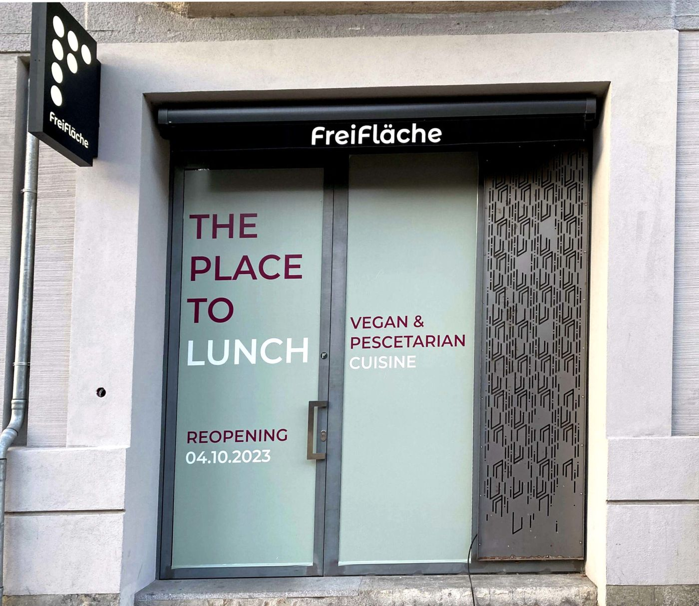
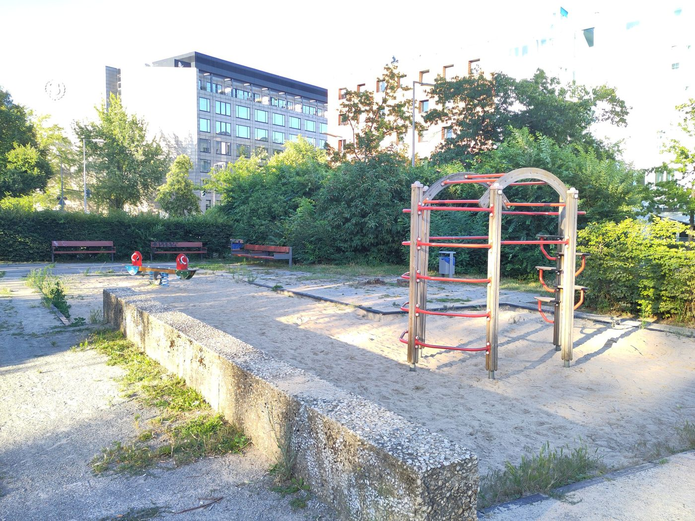

Den Kiez kennenlernen
Drei Pins vom Magdeburger Platz
Abends, eine Stunde vom Magdeburger Platz.
Essen. FreiFläche, Bülowstraße 90. Bistro im Haus. Der Beitrag von 2023 meldet die Wiedereröffnung nach der Renovierung. Öffnungszeiten
Stopps
- Magdeburger Platz

Leerfläche am Magdeburger Platz - Schwules Museum
- FreiFläche Öffnungszeiten

Wiedereröffnung „FreiFläche“- Eventspace, Studio & Bistro - Lützowplatz

Kiez mit Kind: Der “Spielplatz” am Lützowplatz
Gelesen
Der Spielplatz auf dem Magdeburger Platz, Beitrag vom 14. März 2026, erwacht seit einigen Wochen aus dem Winterschlaf und wird umgegraben. Irgendetwas ist anders, und es sticht nicht sofort ins Auge: eine größere Freifläche, auf die noch ein Spielelement passen würde. Dann ist klar, das Holzplateau mit Seilzug und „Sandrutschen“ ist weg. War etwas kaputt, oder morsch? Kommt etwas Neues? An der kleinen Empore hatten viele Kinder und einige Generationen Spaß. Der Text lässt es offen und verspricht, auf dem Laufenden zu bleiben.
Essen, in einem anderen Stück, ist die FreiFläche in der Bülowstraße 90. Am 2. Oktober 2023 öffnet sie ab Mittwoch, dem 4. Oktober, nach längeren Renovierungsarbeiten wieder. Ein Ort für Konferenzen und Präsentationen. Das vegan-vegetarische Bistro bietet täglich hausgemachte Speisen und Getränke, für Veranstaltungen auch Catering. Geöffnet, in diesem Beitrag, Montag bis Freitag von 9 bis 15 Uhr. Die Studios: Konferenzaufbauten mit bis zu fünf Referenten und bis zu hundert Gästen vor Ort, und die Möglichkeit, an Tausende online zu streamen.
Das Schwule Museum, Lützowstraße 73, wird im Beitrag vom 4. Dezember 2025 vierzig. Gefeiert wird das Organisieren, Sammeln, Archivieren und Ausstellen. Am Sonntag, dem 7. Dezember, von 14 bis 18 Uhr, einen Tag nach dem Jahrestag am 6. Dezember, ist der Eintritt frei. Am Dienstag, dem 9. Dezember, 17 Uhr, ein Infotreffen fürs Ehrenamt im Museumscafé. Am Freitag, dem 12. Dezember, 13 bis 17 Uhr, Queer Writing: Lynn Breedlove, Musiker, Schriftsteller, Performer, Aktivist, trans Mann, bekannt durch die queeren Punkbands Tribe 8 und The Homobiles, leitet mit Panda Ortmann einen Workshop, in englischer Lautsprache, Eintritt 10 Euro oder 3, Anmeldung über die Museumsadresse. Laufende Ausstellungen in dem Text: „Feuer + Flamme dem Patriarchat. Petra Galls Fotos der Berliner FrauenLesben-Szene“, bis 23. Februar 2026. „A Heart that Beats – Focus on Queer Ukrainian Art“, bis 25. Januar 2026. „Love At First Fight – Queere Bewegungen in Deutschland seit Stonewall“, bis 29. Juni 2026. Dazu Online-Projekte, darunter „Wir waren schon immer überall“ in der Berlin History App, „Unknown Objects“, das Archivmagazin „Jahr der Frau_en“, „Queer as German Folk“, „Inter* Utopia“ und „Oral HIVstory“.
Der Lützowplatz am Ende ist in der Kinderserie vom 26. Juli 2024 der ehemalige Holzlagerplatz, und aus der Sicht eines Spielplatzkindes ein trauriger Ort. Die Serie fragt, ab wann ein Spielplatz ein Spielplatz ist. Machen ein Klettergerüst und eine Wippe in einem Sand-Rechteck ihn schon dazu? Kinder sieht man selten. Eher kommt man zufällig vorbei, mit Zeit bis zum Bus, oder die Familie isst in der gegenüberliegenden Pizzeria und das Kind will nicht sitzen bleiben. Viele Sitzplätze, im Sommer die Wiese als Liegefläche oder Ballplatz. Von allen Seiten laute und teilweise sehr schnelle Autos. Am Spielplatz direkt kein Schatten. Die Aufenthaltsqualität des Platzes selbst eher mäßig. Einigermaßen sauber, für eine Spielpause während des Pizzeriabesuchs noch geeignet. Die Brunnen und Wasserbecken, streng genommen nicht zum Spielplatz gehörend, sind kein Ersatz für den ehemals hier stehenden Herkulesbrunnen, bringen an heißen Tagen aber Frische. Das Fazit des Beitrags: auch der Spielplatz schafft es nicht, den Lützowplatz zu beleben. Drei Halt, solange es hell ist.